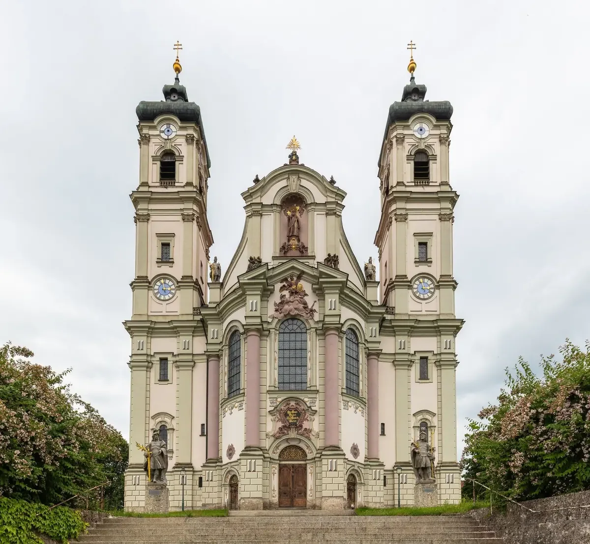
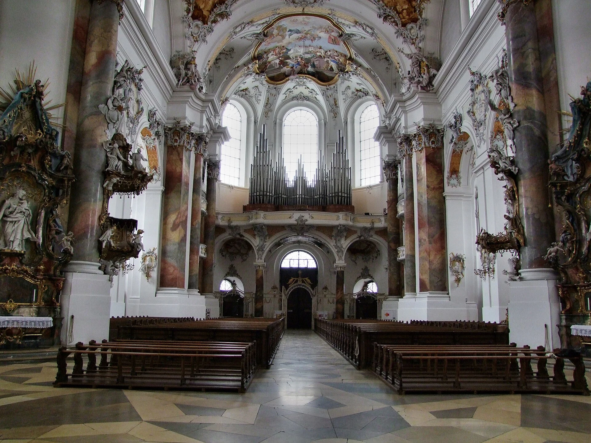
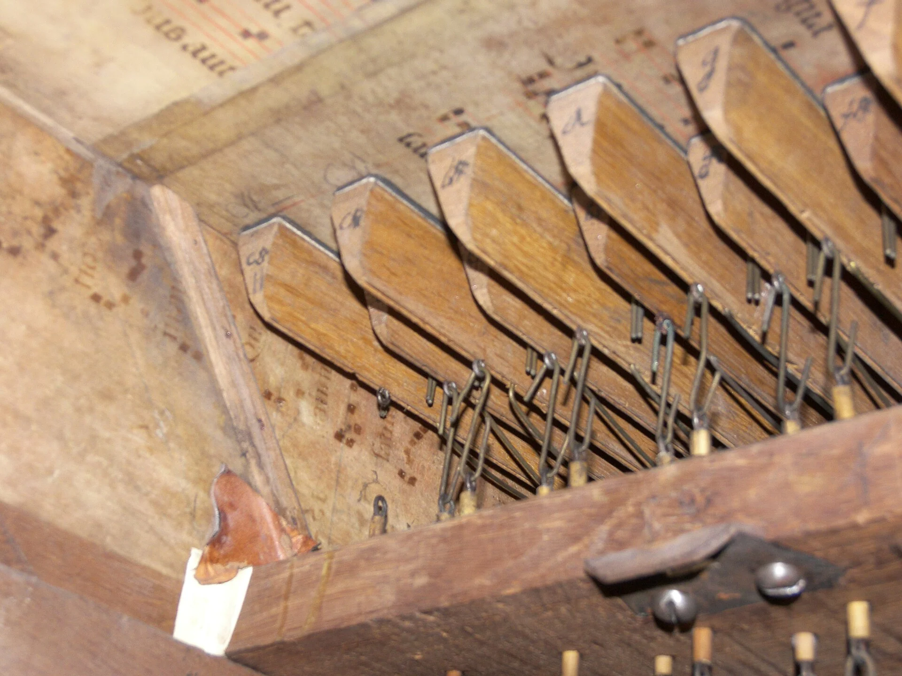
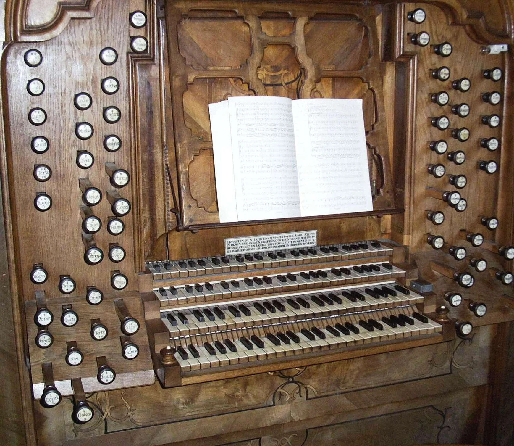
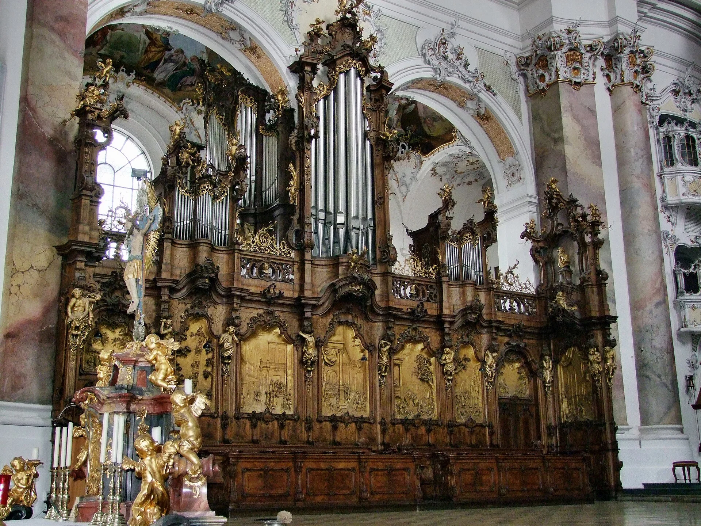
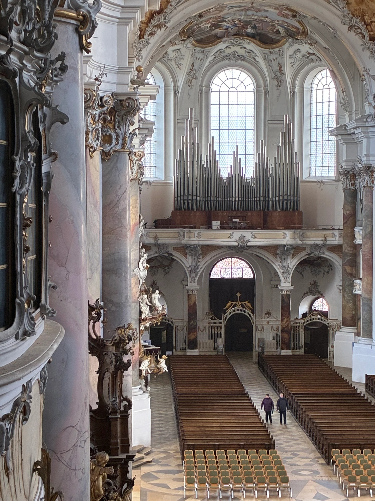
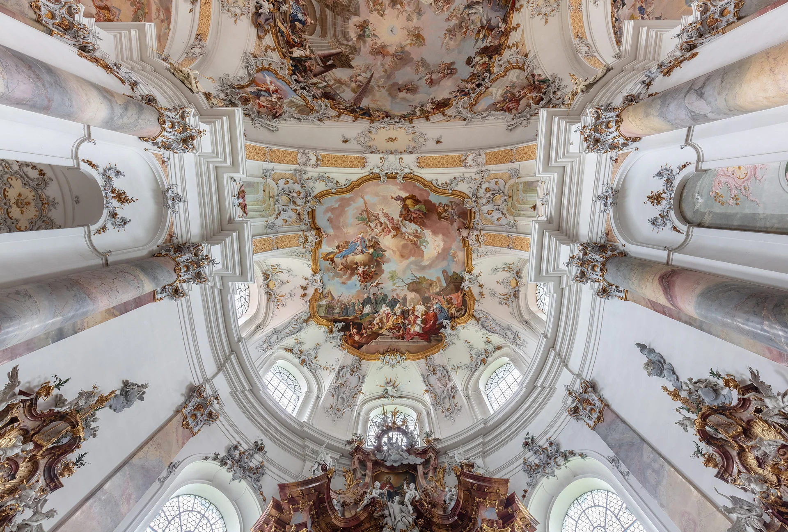

아직 펼치지 않은 카드돌로 지은 숲과 금빛 천장 · 4오토보이렌 수도원 성당1,200년 넘은 수도원에 18세기에 지은 성당이 있어요. 이 성당 안에는 소리를 내는 보물이 셋이나 있대요. 무엇일까요?쌍둥이 탑이 있는 분홍빛 성당이야. 안에 오르간이 세 대나 있대!
1754~1766년 · 1957년독일 바이에른 · 오토보이렌 수도원 성당
오토보이렌 수도원 성당
오토보이렌 수도원 성당의 성가대석 양쪽에는 18세기 오르간 두 대가 마주 서 있어요. 프랑스에서 이름을 떨친 이 고장 출신 장인이 열한 해 동안 지었어요. 성가대석 사진 속에서 소리 내는 보물과 숨은 것들을 하나씩 찾아보세요.
수도원 성당에 오르간이 세 대나 있대! 사진 속에서 오르간과 숨은 것들을 찾아볼까?
검수 전 시안이에요(기준서 1판). 오르간 이야기는 수도원 공식 누리집과 오르간 연구 자료를 따랐고, 자료마다 다른 날짜는 ‘기록마다 다른 점’에 적었어요. 상상은 ‘눈 감고 상상해 보기’에만 썼어요.
시안 확인용카드 단계 미리 보기
1
프랑스에서 이름을 떨친 장인
오토보이렌 수도원 성당에는 오르간이 셋 있어요. 그 가운데 성가대석 양쪽에 마주 선 두 대는 카를 요제프 리프(Karl Joseph Riepp)가 지었어요.
리프는 1710년 오토보이렌의 작은 마을 엘데른(Eldern)에서 태어났어요. 1735년부터 프랑스에서 일하며 오르간을 짓고, 포도주 장사도 했어요.

1747년, 프랑스는 그의 솜씨가 뛰어나다며 프랑스 시민권을 주고 ‘왕이 허락한 오르간 장인’으로 인정했어요. 1740~1745년에 지은 디종 생베니뉴 대성당의 오르간은 한때 그가 프랑스에 지은 가장 큰 오르간이었어요.
그런 장인이 고향 가까운 수도원의 새 성당 오르간을 맡았어요. 사진은 성당 한가운데에서 입구 쪽을 본 모습이에요. 맨 끝 2층의 은빛 파이프는 훨씬 뒤에 놓은 세 번째 오르간이에요.
프랑스에서 아주 유명했던 오르간 아저씨가 고향 가까운 수도원 오르간을 만들었대.
물어보기사진 맨 끝에 보이는 은빛 기둥들은 무엇일까?
2
열한 해 걸린 오르간
수도원은 성가대석 양쪽에 오르간 두 대를 맡겼어요. 오르간 연주자 폴 헤일은 큰 ‘삼위일체 오르간’에 1754년부터 1766년까지 열한 해가 걸렸다고 적었어요.
삼위일체 오르간은 건반이 네 단, 음전이 47개예요. 작은 ‘성령 오르간’은 건반이 두 단, 음전이 27개예요. 음전은 소리 빛깔을 고르는 손잡이예요.


리프는 프랑스 오르간과 남부 독일 오르간의 좋은 점을 한데 모았다는 평을 들어요.
오른쪽은 삼위일체 오르간의 연주대예요. 연주대는 성가대석 건너편을 바라보는 오르간 상자 뒤에 숨어 있어요. 위쪽 건반은 짧아서, 하프시코드를 치듯 손가락을 둥글게 세워 또박또박 쳐야 한대요. 하프시코드는 피아노보다 먼저 널리 쓰인 건반 악기예요.
왼쪽은 그 오르간 속이에요. 손글씨가 적힌 나무 부품들이 가는 철사로 이어져 있어요.
큰 오르간은 다 만드는 데 열한 해나 걸렸대!
물어보기오른쪽 사진의 연주대에 건반이 몇 단 있을까?
3
1766년 가을, 성가대석
1766년, 수도원은 새 성당을 봉헌하고 수도원이 세워진 지 1,000년을 기리는 잔치를 열었어요. 폴 헤일은 성령 오르간이 9월 26일 기념 예배 바로 앞에야 끝났다고 적었어요.
성가대석은 수도자들이 기도 시간마다 마주 앉아 시편을 노래하는 자리예요. 베네딕도 규칙서는 “하루 일곱 번 주를 찬양한다”는 시편 말씀(시편 119편 164절)을 따라 하루 일곱 번의 기도 시간을 정했어요.
성가대석 사진 속 숫자를 하나씩 눌러 보세요.

북쪽 성가대석과 그 위의 성령 오르간(2009년 사진) · 사진: Johannes Böckh & Thomas Mirtsch(2009) · CC BY-SA 3.0 · 위키미디어 공용
그림 위의 숫자나 아래 번호를 눌러 보세요.
다섯 곳을 다 찾았어요. 맞은편 남쪽 성가대석 위에는 건반 네 단의 삼위일체 오르간이 이 오르간과 마주 서 있어요.
사진은 북쪽 성가대석 위의 성령 오르간이에요. 맞은편 남쪽에는 더 큰 삼위일체 오르간이 마주 서 있어요.
수도사들이 여기 마주 앉아 기도 시간마다 노래해. 의자 위에 오르간이 있어!
물어보기사진에서 은빛 파이프를 먼저 찾아볼까?
4
세 번째 오르간
리프는 성당 입구 위 2층에 세 번째 오르간도 계획했어요.
하지만 돈이 모자라 그 오르간은 지어지지 못했어요. 1775년 리프가 세상을 떠난 뒤에는 그의 제자 요한 네포무크 홀차이(Johann Nepomuk Holzhay)가 두 오르간을 돌봤어요.

첫 장면 사진 맨 끝에 작게 보이던 은빛 파이프가 바로 이 자리예요. 이번에는 2층 높은 곳에서 그 파이프를 마주 봐요.
리프가 계획한 세 번째 오르간을 지을 돈이 모자랐어요. 그 무렵 수도원 사람이라면 어떻게 할까요?
세 번째 오르간은 돈이 모자라서 오랫동안 못 지었대.
물어보기사진에서 세 번째 오르간을 찾아볼까?
눈 감고 상상해 보기
1766년 가을, 새로 지은 하얀 성당 안에 사람들이 가득해요. 성가대석의 수도자들이 일어서고, 양쪽 오르간이 숨을 크게 들이쉬듯 소리를 내기 시작해요. 낮은 소리는 발바닥까지 울리고, 높은 소리는 금빛 천장으로 올라가요.
눈을 감아 봐. 아주 큰 하얀 성당이야. 양쪽에서 오르간이 부우웅 소리를 내. 발바닥까지 울려!
나의 자리
서로 다른 소리를 내는 세 오르간처럼, 내 곁의 다른 목소리들은 어떻게 어울리고 있나요?
오르간 소리를 들어 본 적 있어?
마음에 닿는 한 줄을 고르거나 직접 써 보세요. 한 줄을 남기면 이 자리의 도장이 찍혀요. 이 기기에만 저장돼요.
더 깊이
궁금한 칸만 펼쳐 읽어도 괜찮아요.
알고 보면
낮게 맞춘 음 리프는 오르간을 프랑스식으로 낮은 음높이에 맞췄어요. 뒤에 관현악과 함께 연주하기 어려워져, 제자 홀차이가 1787년에 음을 반음쯤 올렸어요.
여러 번의 손질 1862년 아우크스부르크의 요제프 볼이 삼위일체 오르간의 낡은 풀무를 바람 저장통으로 바꾸고, 프랑스식 발건반을 독일식으로 바꿨어요. 1914년과 1922년에는 슈타인마이어 회사가 두 오르간을 고쳤어요.
마리아 오르간 1957년 6월 22일에 봉헌된 세 번째 오르간이에요. 건반이 다섯 단이고, 2001~2002년에 클라이스 회사가 다시 손질했어요.
하프를 타는 다윗 성가대석 부조 가운데에는 사울 왕 앞에서 하프를 타는 다윗도 있어요(사무엘상 16장 23절). 1760년 무렵 크리스티안이 피나무에 새겼어요.
기록마다 다른 점
천 년 잔치는 언제? 폴 헤일은 수도원 1,000주년을 1764년에 기념했다고 적었어요. 그라이펜베르거 악기 연구소는 오르간이 늦어져 1,000년 잔치가 2년 미뤄졌다고 적고, 역사학자 뢰멜트는 오토보이렌의 1,000년 잔치를 1766년으로 들어요.
어느 오르간이 마지막에? 그라이펜베르거 악기 연구소는 성령 오르간을 1762년에 끝내고 삼위일체 오르간이 4년 더 걸렸다고 적었어요. 폴 헤일은 성령 오르간이 1762년까지 끝날 예정이었지만 1766년 9월 26일 기념 예배 바로 앞에 끝났다고 적었어요.
공사를 시작한 해 폴 헤일은 1754년, 그라이펜베르거 악기 연구소는 1755년이라고 적었어요.
직접 가 보기

확인한 날 · 2026년 11월 18일 · 바뀌기 쉬운 정보라 정기적으로 다시 확인해요
두 성가대 오르간은 성당 앞쪽 제단 가까이 양쪽에, 마리아 오르간은 입구 위 2층에 있어요.
부활절 뒤부터 10월까지 토요일 오후에 신청 없이 따라갈 수 있는 성당 안내가 있어요. 오르간 연주회와 바실리카 음악회 일정은 공식 누리집과 오토보이렌 관광 안내에서 확인해 주세요.
성가대석 속 보물 찾기 금박
성가대석 사진 속 다섯 곳을 모두 찾아 읽으면 카드에 금박이 입혀져요.
성가대석 사진 속 다섯 곳을 모두 찾아 읽기
세 번째 오르간 채색
둘 가운데 하나만 해도 카드가 채색돼요.
수도원 사람이 되어 세 번째 오르간을 어떻게 할지 고르기
아이와 함께 ‘영화처럼 보기’를 끝까지 보기
근거 보기 (12)
- 오토보이렌 수도원 공식 누리집: 바실리카 — 리프의 성가대 오르간, 삼위일체 오르간 건반 네 단·음전 47개, 성령 오르간 건반 두 단·음전 27개, 성가대석 목수 마르틴 헤르만·부조 요한 요제프 크리스티안, 티롤의 요한 야코프·프란츠 안톤 차일러의 천장화, 1737~1766년
- 그라이펜베르거 악기 연구소: 오토보이렌 — 1755년 시작, 성령 오르간 1762년, 삼위일체 오르간 4년 더, 1,000년 잔치 2년 늦춤, 성가대석 위 두 오르간(목수 헤르만·조각 크리스티안), 1775년 뒤 홀차이, 1787년 음높이, 1862년 볼, 1914·1922년 슈타인마이어, 1957년 슈타인마이어·2001/02년 클라이스
- 그라이펜베르거 악기 연구소: 기록 사진 — 북쪽(복음서 쪽) 성가대 오르간이 성령 오르간, 두 오르간(1762/66)이 성가대석과 한 몸
- 그라이펜베르거 악기 연구소: 오르간 지형 — 리프가 프랑스와 남부 독일 오르간을 한데 모음
- 그라이펜베르거 악기 연구소: 디종 생베니뉴 대성당 — 카를 요제프·루퍼트 리프 1740~1745년, 한때 프랑스의 리프 오르간 가운데 가장 큼
- 폴 헤일, 「오토보이렌 성당의 오르간들」, 오거니스츠 리뷰 2013년 12월 — 독일 태생·프랑스 시민권, 삼위일체 오르간 1754~1766년(11년), 1766년 9월 26일 기념 예배, 1,000주년 1764년, 2층 오르간은 돈이 모자라 못 지음, 1795년 홀차이의 작은 오르간(지금 바벤하우젠), 1952년 기금·1957년 6월 22일 마리아 오르간(건반 다섯 단), 2001~2002년 클라이스, 연주대 자리와 짧은 위 건반
- 유럽 연구 도서관 연합(CERL) 인물 자료: 카를 요제프 리프 — 1710~1775, 엘데른 출생, 디종 사망, 포도주 상인, 1735년부터 프랑스, 1747년 프랑스 시민권(왕이 허락한 오르간 장인)
- 아우크스부르크 교구사 연보: ‘오토보이렌 곁의 엘데른’
- 뢰멜트, 「1777년 켐프텐 수도원의 1,000년 잔치」 — 오토보이렌의 1,000년 잔치(1766), ‘성당 봉헌을 맞은 잔칫날들’
- 베네딕도 규칙서 16장(성 베네딕도회 누리집) — “하루 일곱 번 주를 찬양한다”(시편 119편 164절)와 하루의 기도 시간
- 독일 디지털 도서관(마르부르크 사진 문서관): ‘시편을 노래하는 다윗’ — 크리스티안, 성가대석 부조, 피나무, 1760년 무렵, 사울 왕 앞에서 하프를 타는 다윗
- 위키미디어 공용: 성당 안(2009) · 삼위일체 오르간 속(2007) · 연주대(2006) · 성령 오르간과 성가대석(2009) · 마리아 오르간(2026) · 천장(2019)의 설명
그림·사진·소리 출처
- 사진: Johannes Böckh & Thomas Mirtsch(2009) · CC BY-SA 3.0 · 위키미디어 공용
- 사진: Josef Miltschitzky(2007) · CC BY-SA 4.0 · 위키미디어 공용
- 사진: Metzner(2006) · CC BY-SA 3.0 · 위키미디어 공용 · 사람 손이 나온 가장자리는 잘라 냄
- 사진: Johannes Böckh & Thomas Mirtsch(2009) · CC BY-SA 3.0 · 위키미디어 공용
- 사진: Horn8(2026) · CC BY-SA 4.0 · 위키미디어 공용
- 사진: Diego Delso(2019) · CC BY-SA 4.0 · 위키미디어 공용
- 사진: Diego Delso · CC BY-SA 4.0 · 위키미디어 공용
‘처음 만나는 기독교 문화’의 깊은 카드예요. 실제 인물의 사진은 쓰지 않았어요(연주대 사진의 손은 잘라 냈어요). 카드 단계와 남긴 글은 이 기기에만 저장돼요.